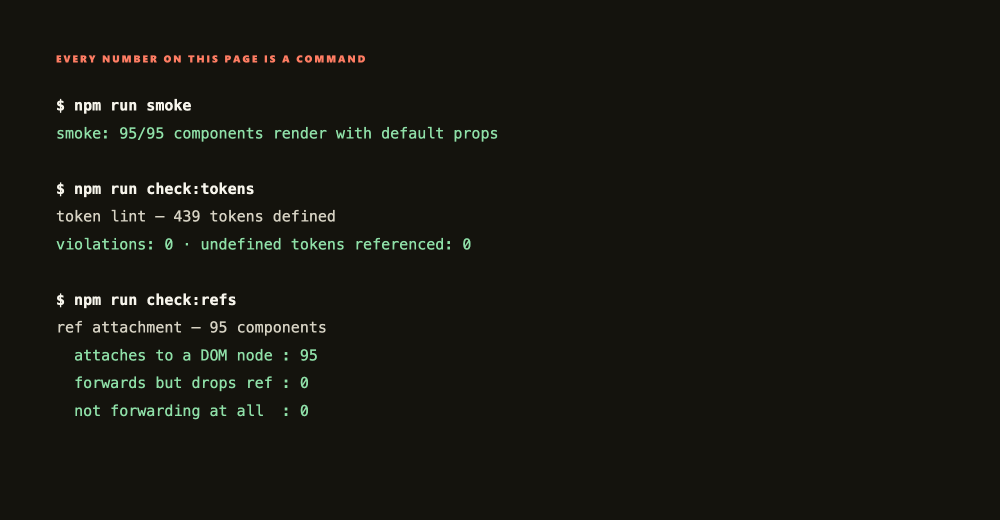

llms.txt
Docs read in a fixed order
The front door names the library and the order to read the rest in, so an agent can't guess halfway through. The components.json index is generated from the code, so it never goes stale.
Every surface is a live instance from the installed package. Nothing here is a picture.
A Figma library and a codebase drift apart from day one. I'd built the Figma half and written the rules, but I'd never had to defend either against a compiler. So I wanted a straight answer. Is the system actually consistent, or does it only look that way in Figma?
Rebuilt the library in React on three-tier tokens, wrote the rules in a format an AI can read, and packaged it with versions and releases. Then a three-stage agent pipeline graded 76 of 95 components against the written standard. 19 remain explicitly ungraded.
Not one component got an A, and the worst category was the rule I was most sure of. I fixed everything a script could catch, then published the rest as open findings instead of quietly closing them.
# it's on npm
$ npm install @ivancreatelabs/design-system
# load the tokens once, at your app root
$ import "@ivancreatelabs/design-system/tokens.css"
# then build with Button, DataTable, MapCard…
$ import { Button, MapCard } from "@ivancreatelabs/design-system"The counts come from the repo's own scripts, not from me. It's a personal project and it isn't running in production anywhere.
This is the installed library running live in your browser. Sign-in, billing, a pipeline dashboard, an org-scope editor, a map, a mail-merge print preview and more, all built from the same components and tokens. The fields type, the toggles flip, the layout reflows.
When I joined, LettrLabs had no design system at all. Figma was empty. Raw hex colours, no text or type styles, no components, and no designer had ever owned it. In the product it showed as 10 button styles, 4 table patterns, up to 5 "primary" buttons competing on a single screen, no documented UX process and no voice. On the screens that drove revenue, buttons fought for the same click.
So I built the system, and I built it with the people who'd live in it. I worked directly with the CTO, the CEO and the engineers to pin down the primary action on each screen, the core flows and the feel. From raw colours up I built the Figma foundation, meaning type styles, tokens and components, and held all of it to one rule. Same job, same pattern. An orders table behaves like every other table. One primary action, one CTA. A mental model you learn once and reuse everywhere.
Here's the honest part. Even with one designer holding it, the system still drifted and regressed. We rebuilt the library and workspace twice in fourteen months. Rules that live in one person's head, even mine, don't hold, so they had to become machine-checkable. That's the bridge from the Figma work to the AI validators, and later to the lint-enforced package. After I was let go I finished the job and rewrote the whole system as a packaged React library, with rules a script or a model can enforce. The rest of this page is that system.
"We spent a week arguing about one button. That sounds inefficient, but the decision became the criteria every component after it was measured against, and the rest went fast. Working with engineers who think in systems, my job wasn't to control the outcome. It was to find the decision they already wanted, and make it consistent."
The 439 tokens are layered so meaning drives the UI, and named the same way every time: category, role, intensity.
brand/bg/default and neutral/text-icon/strong, so what you meant stays the same even when the value under it changes.
Rendered straight from tokens.css, so the swatches are the live values and not a diagram of them.
Forty of the ninety-five, each a real interactive instance from the installed package. Flip the toggles, type in the fields.
The count hides something I should say plainly. 56 of the 95 are global primitives built as a system (Button, InputField, DataTable). The other 39 are product one-offs I pulled into one place, things like map tools, charts, org and campaign screens. Both are real components. Only one set was ever built to a standard, and the audit felt that difference.
Writing the docs for an AI made them better for people too. You can't tell a model to "use appropriate spacing," so every rule had to turn into something checkable or it got cut. Four things carry the system to whoever, or whatever, builds next.
The front door names the library and the order to read the rest in, so an agent can't guess halfway through. The components.json index is generated from the code, so it never goes stale.
The core rule comes first. Search for what already exists and reuse it before making anything new, and never hard-code a colour, size or radius where a token exists. Flag what's missing instead of papering over it.
Every message follows the same pattern. What happened, what it means, what to do next. Give a model the state and it fills in the blanks.
System failure → "We couldn't [action]. [Next step]. If it continues, [fallback]."Validation → "[Item] is required. [Action] to continue."Not every difference is a mistake, but every one of them gets a decision. That's how a one-person system survives a growing team.
Violation breaks a rule → fix the designDeviation has the right value but no token → fix the bindingNew pattern is undocumented → name it, or replace itI couldn't audit 95 components by hand, and I didn't trust myself to. So I ran a three-stage agent audit. Write the standard, grade 76 components against it, then fix. The written rules decided, not my taste. Nineteen components remain explicitly ungraded.
Every row is a script that fails the build, so it can't quietly regress. Anyone with the code can run these numbers again.

The audit ships with the system, unfixed findings and all. What a system actually looks like beats what its owner says about it. Two categories are closed and enforced by the build. The other eight are open or partly open, and I'd rather name each one than call the audit complete. Anything without a check behind it drifts back, whatever I claim today.
| Category | What the audit found | Status |
|---|---|---|
| semantic-token | Raw values where a token exists. The biggest category in the audit, and now the most strictly enforced, because the lint fails the build. | Closed · enforced |
| ref | Refs not forwarded, or forwarded then dropped before they reach an element. Every component now gets rendered and checked. | Closed · enforced |
| a11y | Labels, error announcements and icon labelling are fixed and checked. Keyboard navigation, focus trapping and expanded/selected state aren't. Several menus and overlays still can't be used properly from a keyboard. | Partly open |
| dynamic-data | Components shipping hardcoded sample data as a default, or missing their loading, empty and error states. The data table is fixed. The rest aren't. | Open |
| props-api | Names that don't match sibling components, missing passthrough, and props leaking onto DOM nodes. | Open |
| controlled | Components that handle controlled or uncontrolled use, but not both properly. A parent sets a value after mount and nothing happens. | Open |
| state · consistency | States you can't reach or can't tell apart, and components solving the same problem differently from their siblings. | Open |
| ssr | A few components touch window or document outside an effect, which crashes server-side rendering. | Open |
| no tiering | The manifest lists all 95 flat. Nothing in the data tells an agent that a map control isn't a reusable primitive, so it invites reuse of one-off product components everywhere. | Open |
| never audited | Nineteen components never got graded. They pass the automated checks, but nobody has actually read them yet, and I'd rather say so than call the audit complete. | Open |
This never shipped to customers, so I'm not going to claim a business result. It's a worked example of how I'd run a design system with engineers involved, and proof I can take one past the Figma file.
Most design-system work dies at the Figma file. Mine is an installed, versioned npm package with tokens plus 95 components, and a team could build on it today. That's the half I'd never taken a system through before.
A Senior PM built three working prototypes straight from the same system. It isn't only consistent for its author. Someone who didn't design it could build with it.
I ran an agent audit against a written standard and published what it returned, open findings and all, instead of the version that flatters me.
I can hand an engineer tokens and components that forward refs and pass a lint, instead of a Figma link and a conversation about what I meant.
The rules that survived the audit were the ones a script could check. The ones I'd written as good taste got broken everywhere, by me as much as by any model. So the check comes first now, or the rule doesn't count.
Give an agent a readable spec and a reuse-first rule and it builds from what's there. Give it neither and it invents. That's a design problem before it's a tooling one.
The open list is the roadmap. Keyboard and focus first, because that's the one where a gap actually locks people out instead of just looking messy. Then the props API, so components stop surprising the people building with them.
The package is why any of this holds. There's one versioned source of truth that a fast prototype can pull from and a team can build on, so a fix travels both ways instead of dying in a single screen, and the demo and production stop drifting apart. That's the part an HTML mockup can never be.
So the work now is narrow. Turn more of the open list into checks, and drop any rule I can't enforce. If I can't hand someone a command they run for themselves, it isn't a finished rule yet. It's a hope with good intentions.
"A design system earns its keep when the same rules produce the same answer, whether a designer or a model is doing the work."